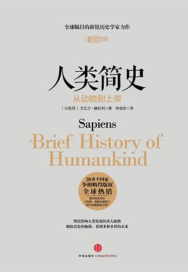

《人类简史》

总体观点
十万年前，地球上至少同时生活着六种不同的人属物种。智人（Homo sapiens）在体力、脑容量与生存技能上并不比尼安德特人或直立人出众，之所以能最终脱颖而出统治全球，靠的是大约七万年前发生的一场“认知革命”——智人演化出了独特的语言能力，不仅能描述客观现实，更能虚构出不存在的“共同想象（虚构故事）”。
整部人类文明史就是虚构故事不断升级换代并维系大规模陌生人协作的演进史：金钱、宗教、帝国与现代有限责任公司，本质上都是建立在互为主体性信念之上的“想象共同体”。然而，文明的演进并不等同于个体幸福的提升——农业革命是一场“史上最大骗局”，它让人类从自由自在的采集者沦为小麦的奴隶；工业与科学革命让人类获得了神一般的力量，却也把人类推向了生态破坏与智人末日的终极十字路口。
全书以跨越生物学、人类学、经济学与哲学的恢弘视野，彻底击碎了人类中心主义的傲慢：我们从一种毫不起眼的动物一路走到今天，即将通过基因工程、半机械人技术自封为神。然而拥有神的力量却不负责任、不知道自己究竟想要什么，才是人类面临的最大危险。
核心观点
-
1. 认知革命的秘密：通过“虚构故事”实现成千上万陌生人的大规模协作
黑猩猩等灵长类动物的群体规模受限于梳毛社交，上限约为150人（邓巴数）。智人通过相信虚构的神话、图腾与国家，得以让数百万人齐心协力。
标致汽车公司（Peugeot）并非特定工厂或具体车辆，哪怕所有工人被解雇、厂房被炸毁，只要法律虚构概念存在，公司就能继续向银行贷款重生。 -
2. 农业革命是“史上最大骗局”：小麦驯化了人类，而非相反
相比采集狩猎祖先丰富多样的饮食与充裕闲暇，早期农民日出而作、弯腰弓背死守单调谷物，营养更差、疾病更多，工作更累却换来人口大爆炸。
智人祖先采集几小时就能吃饱且摄入几十种坚果野果；农夫为了伺候小麦必须整天挑水除草、除虫松土，一旦遭遇旱灾便全家活活饿死。 -
3. 金钱是人类有史以来最伟大、最普遍的信任体系
宗教会因信仰异端而相互屠杀，帝国会因征服而相互对抗，唯有金钱跨越了所有种族、文化与宗教界限，每个人都坚信别人也会相信纸币的价值。
信奉基督教的十字军骑士与信奉伊斯兰教的萨拉丁军队在战场上生死搏杀，但在港口集市上，双方商人毫不犹豫地互相接受对方印有元首头像的纯金硬币。 -
4. 科学革命的核心动力在于“承认自己的无知”
古代宗教典籍宣称全知全能，禁止怀疑既有教义；现代科学则承认人类对世界所知甚少，通过实证观察、数学工具与开放求真推动了知识的指数级爆炸。
古地图上会把所有未知大洋都画满虚构怪兽；而15世纪欧洲航海图开始诚实留出大片空白，写上“此处未知”，激发了哥伦布与麦哲伦探险未知的狂热。 -
5. 资本主义的核心教条：对未来的信任与利润的再投资
传统经济认为财富总量是固定的零和博弈；资本主义发明了信用制度，相信明天的经济蛋糕会更大，并将赚取的每一笔利润重新投入研发和扩大再生产。
西班牙帝国掠夺了美洲金银却用于打仗挥霍导致破产；而荷兰东印度公司将商业利润转化为船队再投资与信用债券，奠定了现代全球金融体系。 -
6. 智人末日：人类即将借由生物工程和人工智能超越生物演化法则
四十亿年来所有地球生命都遵循自然选择法则演进。今天人类正在通过基因修改、脑机接口与AI算法开启智慧设计时代，旧智人或将被神人彻底取代。
基因编辑婴儿、植入神经芯片恢复瘫痪者运动能力，人类正从肉身凡胎不可逆地跨越至合成生命时代，改写自生命诞生以来的自然演化历史。
全书思维导图 · 知识脉络树
全书结构
-
第一部分 认知革命（第1-4章：人类崛起、知善恶树、亚当夏娃的一天与生态洪水）
回顾智人从东非微不足道的猿类起源，八万年前因突变获得虚构故事语言能力；展现采集者的逍遥生活，揭露智人迁徙导致全球大型巨兽灭绝的生态浩劫。
智人踏上澳大利亚大陆短短几千年内，当地体重超过50公斤的大型哺乳动物（如双门齿兽、巨袋鼠）90%以上彻底灭绝。 -
第二部分 农业革命（第5-8章：史上最大骗局、金字塔、记忆过载与历史无正义）
反思小麦玉米如何“驯化”人类，解析想象构建的金字塔秩序与阶级压迫；文字数字的发明如何突破人脑记忆极限，剖析种姓制度与男尊女卑的历史虚构本质。
《汉谟拉比法典》宣称神意将人分为贵族、平民和奴隶，这种虚构秩序维系了美索不达米亚平原几十万人的社会协作与司法判决。 -
第三部分 人类的融合统一（第9-13章：历史方向、金钱、帝国、宗教与成功法则）
揭示全球文化走向大一统的必然趋势，系统剖析促进人类跨区域连接的三大媒介：经济上的金钱秩序、政治上的帝国愿景与精神上的普遍一神宗教。
罗马帝国在征服地中海沿岸不同民族时，将罗马法、引水渠和公民权推广至异族行省，最终将被征服的高卢人、希腊人重塑为自豪的罗马人。 -
第四部分 科学革命（第14-20章：承认无知、帝国联姻、资本主义、工业巨轮、幸福与智人末日）
梳理五百年来科学与欧洲帝国主义、资本主义的三角循环联盟；追问技术进步是否真的让人类比祖先更幸福，展望生物技术与人工智能终结智人物种的前景。
库克船长率领英国皇家海军远航太平洋考察金星凌日，科学研究与绘制帝国军事海图、寻找补给基地完美绑在同一艘科学考察船上。